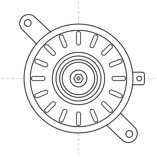
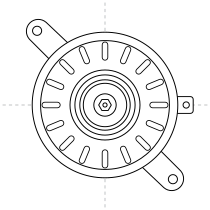
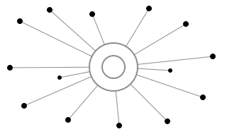

Volkswagen Golf VII · Phare avant gauche
Halogène · 2013–2017, réf. constructeur : 5G1941005
Neuve (Valeo) :190 €
D’occasion sur Ovoko :130 €
60 € de moins sur le prix de la pièce
Plateforme de pièces auto d’occasion
Votre budget réparation compte.
Ovoko réunit 46 millions de pièces d’occasion, proposées par des casses automobiles et des vendeurs professionnels de toute l’Europe, sur une seule plateforme.
Aucun compte nécessaire · Recherche par marque, modèle et pièce
*Étude Ovoko : écart de prix entre une pièce d’origine d’occasion sur Ovoko et la même pièce achetée neuve. L’économie varie selon la pièce et le vendeur.

46 M+
pièces d’occasion
7 400
vendeurs professionnels
Exemple réel Prix vérifiés en septembre 2026

D’occasion : SAS Société Nouvelle Fornes, Meilleur vendeur, France. Extrait de : Golf VII 1.6 TDI de 2015, 127 471 km, réf. 04L903024S. Neuve : Valeo 439791 chez un revendeur en ligne. Prix des pièces TVAC ; dans cet exemple, la livraison vers la Belgique était de 24,84 €. Prix vérifiés sur ovoko.be le 25 septembre 2026.
Voir les annonces de cette pièce sur OvokoNeuve (Valeo), revendeur en ligne
227,87 €
D’origine, d’occasion sur Ovoko
78,55 €
Économie : 149 €sur cette pièce
Halogène · 2013–2017, réf. constructeur : 5G1941005
60 € de moins sur le prix de la pièce
Halogène · 2012–2019, réf. constructeur : 9802221880
53 € de moins sur le prix de la pièce
« J’ai trouvé un alternateur d’occasion à un prix imbattable et en très bon état. Reçu rapidement et très bien emballé. »
 Alex · France · Alternateur d’occasion
28 février 2025 · Avis vérifié
Alex · France · Alternateur d’occasion
28 février 2025 · Avis vérifié
Livré chez vous ou directement chez votre garagiste
1
Les vendeurs Ovoko démontent de vrais véhicules : vous pouvez donc trouver la pièce montée en usine sur votre modèle. Chaque annonce indique la référence constructeur, pour savoir exactement ce que vous achetez.
2
Chaque vendeur est une entreprise enregistrée et chaque pièce se trouve déjà en Europe. Pas d’usine, pas de dropshipping.

3
Comparez l’état et le prix dans toute l’Europe, au lieu d’appeler les casses une par une.
Chaque commande sur Ovoko bénéficie des mêmes protections, quel que soit le vendeur.
Chaque annonce montre les photos de la pièce et du véhicule donneur prises par le vendeur, la référence constructeur, l’état décrit par écrit et le nom du vendeur. Posez vos questions au vendeur avant de commander.
Voir un exemple d’annonceRetournez l’article, quelle qu’en soit la raison, tant que la pièce n’a pas été montée. Ovoko prend généralement en charge les frais de retour.
Lire les conditions de retour« Suite à un retour d’une pièce et d’un remboursement tout s’est très très bien déroulé dans la procédure de retour et un remboursement rapide. Super service client. »
Les pièces portant le badge « Garantie 1 an » sont couvertes contre les pannes mécaniques ou électriques pendant un an. Repérez le badge sur l’annonce.
Ce que couvre la garantieÀ domicile, en distributeur de colis, en point d’enlèvement ou directement chez votre garagiste, avec un lien de suivi. Le prix et le délai estimé s’affichent avant le paiement.
Livraison en BelgiqueVisa, Mastercard, Maestro, PayPal ou virement bancaire en ligne. Vos données de carte sont sécurisées par chiffrement SSL.
Aucun compte nécessaire pour chercher.


Recherche par marque, modèle ou référence de la pièce.
Vu dans
Tous les avis de cette page sont des avis Trustpilot vérifiés publiés sur ovoko.fr, reproduits tels quels ; noms abrégés. Les liens ouvrent l’avis d’origine.
Les pièces démontées sur des véhicules donneurs sont en général celles montées en usine. L’annonce indique la référence constructeur et montre des photos de la pièce exacte : vous pouvez vérifier avant de commander. La plateforme propose aussi des pièces adaptables : comparez toujours la référence à celle de votre pièce.
Vous pouvez la retourner, quelle qu’en soit la raison, tant qu’elle n’a pas été montée : Ovoko prend généralement en charge les frais de retour et vous êtes remboursé. Pour éviter un retour, comparez la référence constructeur de l’annonce avec celle de votre pièce et posez vos questions au vendeur avant de commander. Conditions de retour
Le prix et le délai estimé de livraison s’affichent sur l’annonce et au moment de la commande, avant le paiement. Ils dépendent du pays du vendeur ainsi que du poids et de la taille de la pièce. Chaque envoi est suivi : vous recevez un lien de suivi par e-mail.
Par carte (Visa, Visa Electron, Mastercard, Maestro), PayPal ou virement bancaire en ligne. Les options disponibles s’affichent au moment du paiement, et vos données de carte sont sécurisées par chiffrement SSL.
Non. Recherchez par marque, modèle et nom de la pièce. Si vous avez la référence constructeur, elle affine les résultats et vous permet de vérifier la compatibilité.
Oui. Indiquez l’adresse de votre garagiste ou de votre atelier comme adresse de livraison avant de payer : la pièce lui est livrée directement.